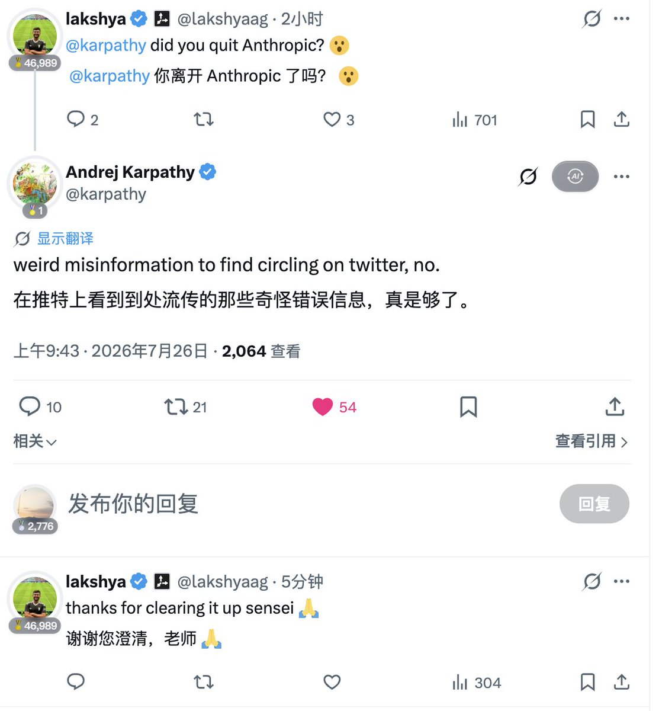

我是觉得 Anthropic 这公司那么无下限，说明他家老板达里奥在百度肯定是受过什么非人的对待的，能说出让 Windows、Office 开源的话
Anthropic 就跟以前的 Apple 一样，以前孤傲觉得自己所向无敌。以前 iPhone 为什么需要越狱？因为难用啊，后面越来越安卓化以后，你看 Cydia 甚至是巨魔不是已经很少有人搞了
总之很多时候，孤傲是一时的，Anthropic 估计过阵子会把模型开源出来都不一定。但我要说的是，当傲慢成为一家公司的特质，那公司的老板也跟乔布斯一样不远了

Anthropic 就跟以前的 Apple 一样，以前孤傲觉得自己所向无敌。以前 iPhone 为什么需要越狱？因为难用啊，后面越来越安卓化以后，你看 Cydia 甚至是巨魔不是已经很少有人搞了
总之很多时候，孤傲是一时的，Anthropic 估计过阵子会把模型开源出来都不一定。但我要说的是，当傲慢成为一家公司的特质，那公司的老板也跟乔布斯一样不远了

有意思，5个小时前有网友发现卡帕西 @karpathy 似乎从Anthropic离职了🤯
原因是他把X个人资料里的介绍给删除了
这随后引起了大范围的猜测，大家纷纷讨论到底是啥情况
然后卡帕西自己辟谣了，他表示推上都在讨论错误的信息
他没有离开 @AnthropicAI
真有意思🤣 https://t.co/avP0rdba2C https://t.co/uJnWfPqdBD
原因是他把X个人资料里的介绍给删除了
这随后引起了大范围的猜测，大家纷纷讨论到底是啥情况
然后卡帕西自己辟谣了，他表示推上都在讨论错误的信息
他没有离开 @AnthropicAI
真有意思🤣 https://t.co/avP0rdba2C https://t.co/uJnWfPqdBD